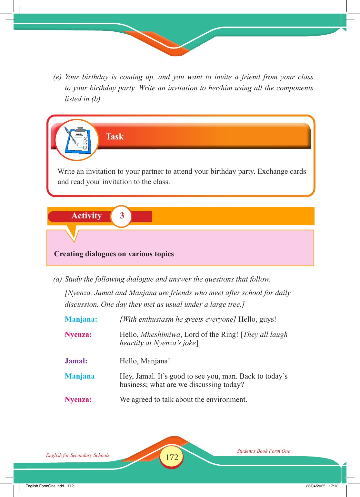

Accessible text transcript - page 172
Use the reader's read-aloud controls or select an individual segment below.
Printed book page 172. (e) Your birthday is coming up, and you want to invite a friend from your class to your birthday party. Write an invitation to her/him using all the components listed in (b). Task heading with a clipboard and pencil icon. Task Write an invitation to your partner to attend your birthday party. Exchange cards and read your invitation to the class. Activity 3: Creating dialogues on various topics. Activity 3 Creating dialogues on various topics (a) Study the following dialogue and answer the questions that follow. [Nyenza, Jamal and Manjana are friends who meet after school for daily discussion. One day they met as usual under a large tree.] Manjana: [With enthusiasm he greets everyone] Hello, guys! Nyenza: Hello, Mheshimiwa, Lord of the Ring! [They all laugh heartily at Nyenza’s joke] Jamal: Hello, Manjana! Manjana: Hey, Jamal. It’s good to see you, man. Back to today’s business; what are we discussing today? Nyenza: We agreed to talk about the environment. English FormOne.indd 172 23/04/2025 17:12 Return to the page image